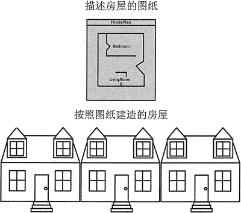
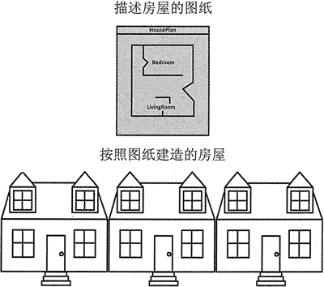

首页 > 编程笔记
C++类对象的创建和使用（详解版）
一个类的声明类似于一幢房屋的图纸。图纸本身不是房屋，而是对于房屋的详细描述。当人们使用图纸建造一幢实际的房屋时，可以说他们正在按照图纸的描述建造房屋的一个实例。
如果愿意，人们可以使用同一张图纸建造多幢相同的房屋。每幢房屋都是由图纸描述的房屋的单独实例。这个想法如图 1 所示。

图 1 房屋是图纸的实例
类声明也有类似的用途，它描述了从类创建的对象在构造时将是什么样子的。从它创建的每个对象被称为该类的一个实例，定义一个类对象则被称为类的实例化。
使用简单的定义语句即可为已经定义的类创建类对象，就像在头文件中定义的类的对象一样，也像变量一样。例如，以下语句定义 circle1 和 circle2 为 Circle 类的两个对象：
如前所述，对象的成员变量通常被声明为私有的。但是，如果被声明为公共的，那么也可以通过使用点运算符从类外部访问它。如果 circle 类的 radius 变量是公共的，则可以按如下方式访问它：
还要注意，类成员函数 getArea 仅使用成员变量 radius 但不修改该成员变量。像这样的函数，它使用一个类变量的值，但不改变它，则称为访问器。另一方面，函数 setRadius 修改了 radius 变量的内容，像这样的成员函数，它将一个值存储在一个成员变量中或者改变它的值，则称为设置器。
有些程序员将设置器称为 set 函数或 setter 函数，因为它们设置了一个类变量的值；将访问器称为 get 函数或 getter 函数，因为它们只是检索或使用该值。所以，访问器也称为读取器。
如果愿意，人们可以使用同一张图纸建造多幢相同的房屋。每幢房屋都是由图纸描述的房屋的单独实例。这个想法如图 1 所示。

图 1 房屋是图纸的实例
类声明也有类似的用途，它描述了从类创建的对象在构造时将是什么样子的。从它创建的每个对象被称为该类的一个实例，定义一个类对象则被称为类的实例化。
使用简单的定义语句即可为已经定义的类创建类对象，就像在头文件中定义的类的对象一样，也像变量一样。例如，以下语句定义 circle1 和 circle2 为 Circle 类的两个对象：
Circle circle1, circle2;
它们是 Circle 类的两个不同实例，被分配了不同的内存，以保存各个对象成员变量中存储的值。访问对象的成员
使用点运算符可以访问类对象的公共成员。例如，使用以下语句即可调用 string 对象 city 的 length 函数：cout << city.length() << endl;
以下语句可以调用 circle1 和 circle2 对象的 setRadius 函数：
circle1.setRadius (1.0) ; //该语句可以将circle1的半径设置为1.0
circle2.setRadius (2.5) ; //该语句可以将circle2的半径设置为2.5
如前所述，对象的成员变量通常被声明为私有的。但是，如果被声明为公共的，那么也可以通过使用点运算符从类外部访问它。如果 circle 类的 radius 变量是公共的，则可以按如下方式访问它：
circle1.radius = 1.0;
circle2.radius = 2.5;
cout << "The area of circlel is " << circle1.getArea() << endl;
cout << "The area of circle2 is " << circle2.getArea() << endl;
#include <iostream> #include <cmath> using namespace std; //Circle class declaration class Circle { private: double radius; public: void setRadius(double r) { radius = r; } double getArea() { return 3.14 * pow(radiusA 2); } }; int main() { // Define 2 Circle objects Circle circle1, circle2; // Call the setRadius function for each circle circle1.setRadius(1); // This sets circlel's radius to 1.0 circle2.setRadius(2.5); // This sets circle2's radius to 2.5 // Call the getArea function for each circle and // display the returned result cout << "The area of circle1 is " << circle1.getArea() << endl; cout << "The area of circle2 is " << circle2.getArea() << endl; return 0; }程序输出结果：
The area of circle1 is 3.14
The area of circle2 is 19.625
访问器和设置器
注意上面程序中的第 10 和 14 行，看一看成员函数 setRadius 和 getArea 是如何使用成员变量 radius 的。它们不需要使用点运算符来引用它，因为类的成员函数可以访问同一类的成员变量，就像访问常规变量一样，不需要任何额外的符号。还要注意，类成员函数 getArea 仅使用成员变量 radius 但不修改该成员变量。像这样的函数，它使用一个类变量的值，但不改变它，则称为访问器。另一方面，函数 setRadius 修改了 radius 变量的内容，像这样的成员函数，它将一个值存储在一个成员变量中或者改变它的值，则称为设置器。
有些程序员将设置器称为 set 函数或 setter 函数，因为它们设置了一个类变量的值；将访问器称为 get 函数或 getter 函数，因为它们只是检索或使用该值。所以，访问器也称为读取器。
关注公众号「站长严长生」，在手机上阅读所有教程，随时随地都能学习。内含一款搜索神器，免费下载全网书籍和视频。

微信扫码关注公众号